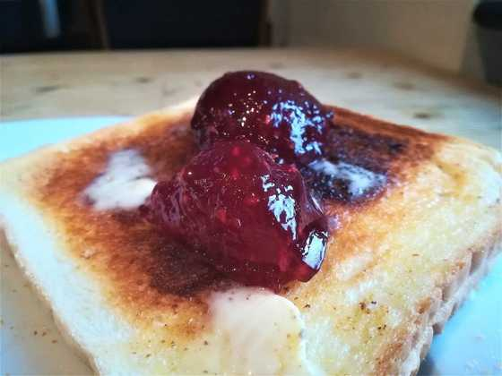
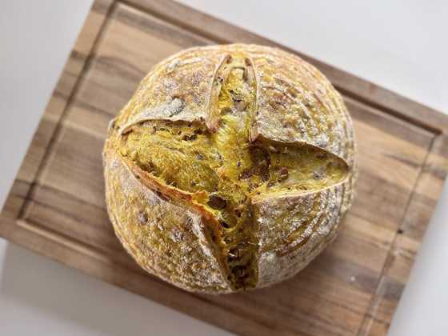
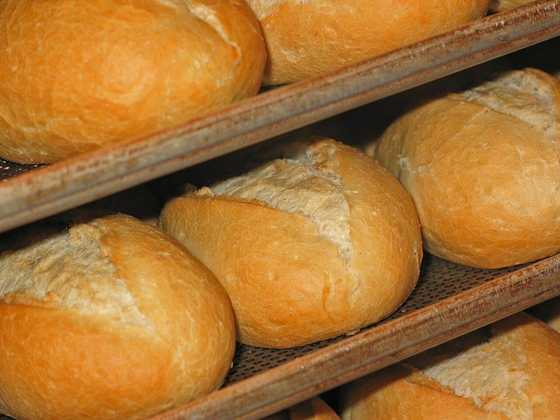

ABOUT
朝のうちに出会う、ベーグル屋さん
「emmm(えむ)」は、千葉県八街市のベーグル屋さんです。Instagramのプロフィールでは「emmm(えむ)ベーグル屋さんです!」と名乗り、営業時間は7:00〜17:00(売り切れ次第終了)と案内されています。
朝早くから店を開け、売り切れたら終わる。このページはその「朝いちばん」の空気を、焼き色のような茶と生成りで表しました。
確認できたこと
・屋号は「emmm(えむ)」
・業態はベーグル屋さん
・営業時間 7:00〜17:00(売り切れ次第終了)
・所在地は八街市八街に
・Instagramで情報発信
店名の意味や創業の経緯は確認できていません。
MENU
メニュー
最新の品ぞろえはInstagramでご確認ください。







VOICE
口コミ(イメージ例)
イメージ例
朝の散歩ついでに寄れるのがうれしい。もちっとした食感を想像するだけで楽しみです。
イメージ例
早い時間から開いているので、出勤前に朝ごはんを買えそう。売り切れ前に行きたいお店。
イメージ例
輪っかのパンをかかえて帰る時間が好き。お土産にも良さそうです。
※上記は制作側が作成したイメージ例で、実在のお客様の声ではありません。
ACCESS
アクセス
| 所在地 | 〒289-1103 千葉県八街市八街に−104−83 |
|---|---|
| 電話 | 準備中 |
| 営業時間 | 7:00〜17:00(売り切れ次第終了)※Instagramより |
| 定休日 | 準備中 |
| @emmm_bagel |